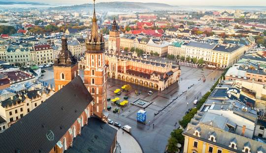

Kraków, Stołeczne Królewskie Miasto Kraków – miasto na prawach powiatu położone w południowej Polsce nad Wisłą, drugie co do liczby mieszkańców[1]. Formalna stolica Polski do 1795 roku i miasto koronacyjne oraz nekropolia królów Polski. Od 1000 roku nieprzerwanie stolica diecezji krakowskiej (jednej z pięciu w ówczesnej Polsce), a od 1925 archidiecezji i metropolii. Lokowany przed 1228 rokiem, ponownie w 1257 r.[5]. Od odzyskania niepodległości w 1918 r. miasto wojewódzkie (od 1999 r. siedziba władz województwa małopolskiego), jest także centralnym ośrodkiem metropolitalnym aglomeracji krakowskiej i Krakowskiego Obszaru Metropolitalnego. Kraków jest stolicą historycznej Małopolski. Leży na obszarze Bramy Krakowskiej, Niecki Nidziańskiej i Pogórza Zachodniobeskidzkiego.
Dziś jedziemy do Krakowa
Każda dama już gotowa
By zobaczyć go od nowa
Znów jedziemy do Krakowa
Kamieniczek tu jest wiele
Piękne parki przy kościele
Miejsce spotkań co niedzielę
Kamieniczek tu jest wiele!
A na rynku zamieszanie
Sprzedawanie, handlowanie
Oglądanie i zwiedzanie
Tu na rynku zamieszanie!
Smok wawelski zieje ogniem
Wszyscy cieszą się przechodnie
Spacerują więc swobodnie
Smok wawelski zieje ogniem!
Wisła – polskich rzek królowa
Od lat płynie wzdłuż Krakowa
Sto tajemnic w sobie chowa
Wisła – polskich rzek królowa!
To jest miasto ukochane
Przez turystów uwielbiane
Bardzo często odwiedzane
Moje miasto ukochane!
Kalina Rokosz
Pełna wersja tutaj, kliknij tu

| Nazwa rezerwatu | Powierzchnia | Przedmiot ochrony |
|---|---|---|
| Bielańskie Skałki | 1,73 ha | spontaniczne procesy sukcesji biocenoz leśnych na skalistym, dawniej pozbawionym lasu terenie |
| Bonarka | 2,29 ha | rezerwat geologiczny, uskoki geologiczno-tektoniczne, powierzchnie abrazyjne, odsłonięte utwory jurajskie, kredowe i trzeciorzędowe |